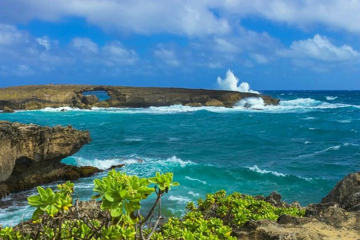

Laie Point is a scenic state wayside park in Laie, Hawaii, offering beautiful views of the Pacific Ocean and opportunities for hiking and picnicking.
Laie Point is a popular destination for both locals and tourists seeking to enjoy the natural beauty of Hawaii. The park features rugged cliffs, lush vegetation, and panoramic views of the ocean, making it an ideal spot for photography, picnicking, and leisurely walks. Visitors can explore the trails that wind through the area, offering opportunities to observe native plants and wildlife.
The park is also known for its cultural significance, as it is located near the historic town of Laie, which has deep roots in Hawaiian history and culture. Laie Point is a place where visitors can connect with nature, appreciate the stunning landscapes, and learn about the rich heritage of the area.
